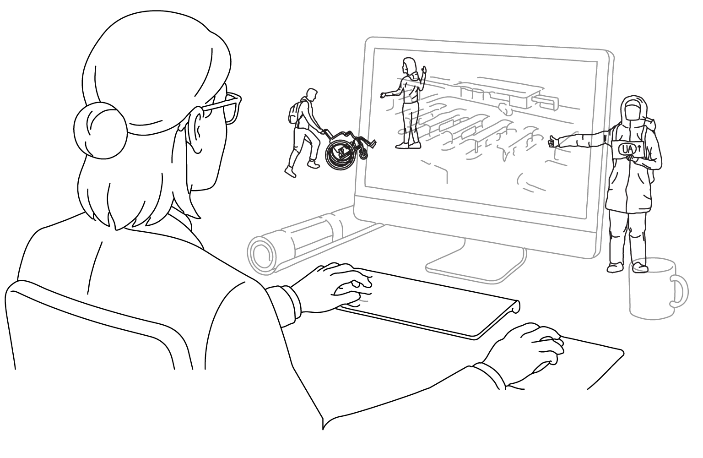

Feel free to save these libraries, use them in your projects, and share them with your colleagues. I look forward to seeing how you utilize them. Please share your feedback with me at the project's Instagram.
DWG files are drawn in mm.
The vector PDF files are in 1:1 scale (therefore, if you insert them for example in a 1:100 drawing layout, scale them down by factor 100).
Credit: movingpeople.github.io